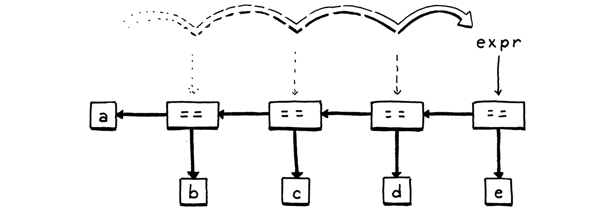

解析表达式
Grammar, which knows how to control even kings. Molière
This chapter marks the first major milestone of the book. Many of us have cobbled together a mishmash of regular expressions and substring operations to extract some sense out of a pile of text. The code was probably riddled with bugs and a beast to maintain. Writing a real parser—one with decent error handling, a coherent internal structure, and the ability to robustly chew through a sophisticated syntax—is considered a rare, impressive skill. In this chapter, you will attain it. 本章是本书的第一个重要里程碑。我们中的许多人都曾将正则表达式和字符串操作糅合在一起，以便从一堆文本中提取一些信息。这些代码可能充满了错误，而且很难维护。编写一个真正的解析器——具有良好的错误处理、一致的内部结构和能够健壮地分析复杂语法的能力——被认为是一种罕见的、令人印象深刻的技能。在这一章中，你将获得这种技能。
It’s easier than you think, partially because we front-loaded a lot of the hard work in the last chapter. You already know your way around a formal grammar. You’re familiar with syntax trees, and we have some Java classes to represent them. The only remaining piece is parsing—transmogrifying a sequence of tokens into one of those syntax trees.
Some CS textbooks make a big deal out of parsers. In the ’60s, computer scientists—understandably tired of programming in assembly language—started designing more sophisticated, human-friendly languages like Fortran and ALGOL. Alas, they weren’t very machine-friendly for the primitive computers of the time. 一些CS教科书在解析器上大做文章。在60年代，计算机科学家——他们理所当然地厌倦了用汇编语言编程——开始设计更复杂的、对人类友好的语言，比如Fortran和ALGOL。唉，对于当时原始的计算机来说，这些语言对机器并不友好。
These pioneers designed languages that they honestly weren’t even sure how to write compilers for, and then did groundbreaking work inventing parsing and compiling techniques that could handle these new, big languages on those old, tiny machines. 这些先驱们设计了一些语言，说实话，他们甚至不知道如何编写编译器。然后他们做了开创性的工作，发明了解析和编译技术，可以在那些老旧、小型的机器上处理这些新的、大型的语言。
Classic compiler books read like fawning hagiographies of these heroes and their tools. The cover of Compilers: Principles, Techniques, and Tools literally has a dragon labeled “complexity of compiler design” being slain by a knight bearing a sword and shield branded “LALR parser generator” and “syntax directed translation”. They laid it on thick. 经典的编译书读起来就像是对这些英雄和他们的工具的吹捧传记。《编译器:原理、技术和工具》（Compilers: Principles, Techniques, and Tools）的封面上有一条标记着“编译器设计复杂性”的龙，被一个手持剑和盾的骑士杀死，剑和盾上标记着“LALR解析器生成器”和“语法制导翻译”。他们在过分吹捧。
A little self-congratulation is well-deserved, but the truth is you don’t need to know most of that stuff to bang out a high quality parser for a modern machine. As always, I encourage you to broaden your education and take it in later, but this book omits the trophy case. 稍微的自我祝贺是当之无愧的，但事实是，你不需要知道其中的大部分知识，就可以为现代机器制作出高质量的解析器。一如既往，我鼓励你先扩大学习范围，以后再慢慢接受它，但这本书省略了奖杯箱。
6 . 1Ambiguity and the Parsing Game 歧义与解析游戏
In the last chapter, I said you can “play” a context-free grammar like a game in order to generate strings. Parsers play that game in reverse. Given a string—a series of tokens—we map those tokens to terminals in the grammar to figure out which rules could have generated that string. 在上一章中，我说过你可以像“玩”游戏一样使用上下文无关的语法来生成字符串。解析器则以相反的方式玩游戏。给定一个字符串(一系列语法标记)，我们将这些标记映射到语法中的终止符，以确定哪些规则可能生成该字符串。
The “could have” part is interesting. It’s entirely possible to create a grammar that is ambiguous, where different choices of productions can lead to the same string. When you’re using the grammar to generate strings, that doesn’t matter much. Once you have the string, who cares how you got to it? “可能产生 “这部分很有意思。我们完全有可能创建一个模棱两可的语法，在这个语法中，不同的生成式可能会得到同一个字符串。当你使用该语法来生成字符串时，这一点不太重要。一旦你有了字符串，谁还会在乎你是怎么得到它的呢？
When parsing, ambiguity means the parser may misunderstand the user’s code. As we parse, we aren’t just determining if the string is valid Lox code, we’re also tracking which rules match which parts of it so that we know what part of the language each token belongs to. Here’s the Lox expression grammar we put together in the last chapter: 但是在解析时，歧义意味着解析器可能会误解用户的代码。当我们进行解析时，我们不仅要确定字符串是不是有效的Lox代码，还要记录哪些规则与代码的哪些部分相匹配，以便我们知道每个标记属于语言的哪一部分。下面是我们在上一章整理的Lox表达式语法：
expression → literal | unary | binary | grouping ; literal → NUMBER | STRING | "true" | "false" | "nil" ; grouping → "(" expression ")" ; unary → ( "-" | "!" ) expression ; binary → expression operator expression ; operator → "==" | "!=" | "<" | "<=" | ">" | ">=" | "+" | "-" | "*" | "/" ;
This is a valid string in that grammar: 下面是一个满足语法的有效字符串：
But there are two ways we could have generated it. One way is: 但是，有两种方式可以生成该字符串。其一是：
- Starting at
expression, pickbinary. - For the left-hand
expression, pickNUMBER, and use6. - For the operator, pick
"/". - For the right-hand
expression, pickbinaryagain. - In that nested
binaryexpression, pick3 - 1. - 从
expression开始，选择binary。 - 对于左边的
expression，选择NUMBER，并且使用6。 - 对于操作符，选择
/。 - 对于右边的
expression，再次选择binary。 - 在内层的
binary表达式中，选择3-1。
Another is: 其二是：
- Starting at
expression, pickbinary. - For the left-hand
expression, pickbinaryagain. - In that nested
binaryexpression, pick6 / 3. - Back at the outer
binary, for the operator, pick"-". - For the right-hand
expression, pickNUMBER, and use1. - 从
expression开始，选择binary。 - 对于左边的
expression，再次选择binary。 - 在内层的
binary表达式中，选择6/3。 - 返回外层的
binary，对于操作符，选择-。 - 对于右边的
expression，选择NUMBER，并且使用1。
Those produce the same strings, but not the same syntax trees:
它们产生相同的字符串，但对应的是不同的语法树：

In other words, the grammar allows seeing the expression as (6 / 3) - 1 or 6 / (3 - 1). The binary rule lets operands nest any which way you want. That in
turn affects the result of evaluating the parsed tree. The way mathematicians
have addressed this ambiguity since blackboards were first invented is by
defining rules for precedence and associativity.
换句话说，这个语法可以将该表达式看作是 (6 / 3) - 1或6 / (3 - 1)。binary 规则运行操作数以任意方式嵌套，这反过来又会影响解析数的计算结果。自从黑板被发明以来，数学家们解决这种模糊性的方法就是定义优先级和结合性规则。
-
Precedence determines which operator is evaluated first in an expression containing a mixture of different operators. Precedence rules tell us that we evaluate the
/before the-in the above example. Operators with higher precedence are evaluated before operators with lower precedence. Equivalently, higher precedence operators are said to “bind tighter”. - 优先级决定了在一个包含不同运算符的混合表达式中，哪个运算符先被执行。优先级规则告诉我们，在上面的例子中，我们在
-之前先计算/。优先级较高的运算符在优先级较低的运算符之前计算。同样，优先级较高的运算符被称为 “更严格的绑定“。 -
Associativity determines which operator is evaluated first in a series of the same operator. When an operator is left-associative (think “left-to-right”), operators on the left evaluate before those on the right. Since
-is left-associative, this expression: - 结合性决定在一系列相同操作符中先计算哪个操作符。如果一个操作符是左结合的(可以认为是“从左到右”)时，左边的操作符在右边的操作符之前计算。因为
-是左结合的，下面的表达式：
-
Precedence determines which operator is evaluated first in an expression containing a mixture of different operators. Precedence rules tell us that we evaluate the
/before the-in the above example. Operators with higher precedence are evaluated before operators with lower precedence. Equivalently, higher precedence operators are said to “bind tighter”. -
Associativity determines which operator is evaluated first in a series of the same operator. When an operator is left-associative (think “left-to-right”), operators on the left evaluate before those on the right. Since
-is left-associative, this expression:5 - 3 - 1
is equivalent to: 等价于：
(5 - 3) - 1
Assignment, on the other hand, is right-associative. This: 另一方面，赋值是右结合的。如：
a = b = c
is equivalent to: 等价于：
a = (b = c)
Without well-defined precedence and associativity, an expression that uses
multiple operators is ambiguous—it can be parsed into different syntax trees,
which could in turn evaluate to different results. We’ll fix that in Lox by
applying the same precedence rules as C, going from lowest to highest.
如果没有明确定义的优先级和结合性，使用多个运算符的表达式可能就会变得有歧义——它可以被解析为不同的语法树，而这些语法树又可能会计算出不同的结果。我们在Lox中会解决这个问题，使用与C语言相同的优先级规则，从低到高分别是：
| Name | Operators | Associates |
| | | |
| Equality 等于 | == != | Left 左结合 |
| Comparison 比较 | > >= < <= | Left 左结合 |
| Term 加减运算 | - + | Left 左结合 |
| Factor 乘除运算 | / * | Left 左结合 |
| Unary 一元运算符 | ! - | Right 右结合 |
| Name | Operators | Associates |
| Equality | == != |
Left |
| Comparison | > >=
< <= |
Left |
| Term | - + |
Left |
| Factor | / * |
Left |
| Unary | ! - |
Right |
Right now, the grammar stuffs all expression types into a single expression
rule. That same rule is used as the non-terminal for operands, which lets the
grammar accept any kind of expression as a subexpression, regardless of whether
the precedence rules allow it.
现在，该语法将所有表达式类型都添加到一个 expression规则中。这条规则同样作用于操作数中的非终止符，这使得语法中可以接受任何类型的表达式作为子表达式，而不管优先级规则是否允许。
We fix that by stratifying the grammar. We define a separate rule for each precedence level. 我们通过对语法进行分层来解决这个问题。我们为每个优先级定义一个单独的规则。
expression → ... equality → ... comparison → ... term → ... factor → ... unary → ... primary → ...
Each rule here only matches expressions at its precedence level or higher. For
example, unary matches a unary expression like !negated or a primary
expression like 1234. And term can match 1 + 2 but also 3 * 4 / 5. The
final primary rule covers the highest-precedence forms—literals and
parenthesized expressions.
此处的每个规则仅匹配其当前优先级或更高优先级的表达式。 例如，unary 匹配一元表达式（如 !negated）或主表达式（如1234）。term可以匹配1 + 2，但也可以匹配3 * 4 /5。最后的primary 规则涵盖优先级最高的形式——字面量和括号表达式。
We just need to fill in the productions for each of those rules. We’ll do the
easy ones first. The top expression rule matches any expression at any
precedence level. Since equality has the lowest
precedence, if we match that, then it covers everything.
我们只需要填写每条规则的生成式。我们先从简单的开始。顶级的expression 规则可以匹配任何优先级的表达式。由于equality的优先级最低，只要我们匹配了它，就涵盖了一切。
expression → equality
Over at the other end of the precedence table, a primary expression contains
all the literals and grouping expressions.
在优先级表的另一端，primary表达式包括所有的字面量和分组表达式。
primary → NUMBER | STRING | "true" | "false" | "nil" | "(" expression ")" ;
A unary expression starts with a unary operator followed by the operand. Since
unary operators can nest—!!true is a valid if weird expression—the
operand can itself be a unary operator. A recursive rule handles that nicely.
一元表达式以一元操作符开头，后跟操作数。因为一元操作符可以嵌套——!!true虽奇怪也是可用的表达式——这个操作数本身可以是一个一元表达式。递归规则可以很好地解决这个问题。
unary → ( "!" | "-" ) unary ;
But this rule has a problem. It never terminates. 但是这条规则有一个问题，它永远不会终止。
Remember, each rule needs to match expressions at that precedence level or higher, so we also need to let this match a primary expression. 请记住，每个规则都需要匹配该优先级或更高优先级的表达式，因此我们还需要使其与主表达式匹配。
unary → ( "!" | "-" ) unary | primary ;
That works. 这样就可以了。
The remaining rules are all binary operators. We’ll start with the rule for multiplication and division. Here’s a first try: 剩下的规则就是二元运算符。我们先从乘法和除法的规则开始。下面是第一次尝试：
factor → factor ( "/" | "*" ) unary | unary ;
The rule recurses to match the left operand. That enables the rule to match a
series of multiplication and division expressions like 1 * 2 / 3. Putting the
recursive production on the left side and unary on the right makes the rule
left-associative and unambiguous.
该规则递归匹配左操作数，这样一来，就可以匹配一系列乘法和除法表达式，例如 1 * 2 / 3。将递归生成式放在左侧并将unary 放在右侧，可以使该规则具有左关联性和明确性。
All of this is correct, but the fact that the first symbol in the body of the
rule is the same as the head of the rule means this production is
left-recursive. Some parsing techniques, including the one we’re going to
use, have trouble with left recursion. (Recursion elsewhere, like we have in
unary and the indirect recursion for grouping in primary are not a problem.)
所有这些都是正确的，但规则主体中的第一个符号与规则头部相同意味着这个生成式是左递归的。一些解析技术，包括我们将要使用的解析技术，在处理左递归时会遇到问题。(其他地方的递归，比如在unary中，以及在primary分组中的间接递归都不是问题。)
There are many grammars you can define that match the same language. The choice for how to model a particular language is partially a matter of taste and partially a pragmatic one. This rule is correct, but not optimal for how we intend to parse it. Instead of a left recursive rule, we’ll use a different one. 你可以定义很多符合同一种语言的语法。如何对某一特定语言进行建模，一部分是品味问题，一部分是实用主义问题。这个规则是正确的，但对于我们后续的解析来说它并不是最优的。我们将使用不同的规则来代替左递归规则。
factor → unary ( ( "/" | "*" ) unary )* ;
We define a factor expression as a flat sequence of multiplications and divisions. This matches the same syntax as the previous rule, but better mirrors the code we’ll write to parse Lox. We use the same structure for all of the other binary operator precedence levels, giving us this complete expression grammar: 我们将因子表达式定义为乘法和除法的扁平序列。这与前面的规则语法相同，但更好地反映了我们将编写的解析Lox的代码。我们对其它二元运算符的优先级使用相同的结构，从而得到下面这个完整的表达式语法： This grammar is more complex than the one we had before, but in return we have eliminated the previous one’s ambiguity. It’s just what we need to make a parser. 这个语法比我们以前的那个更复杂，但反过来我们也消除了前一个语法定义中的歧义。这正是我们制作解析器时所需要的。
expression → equality ; equality → comparison ( ( "!=" | "==" ) comparison )* ; comparison → term ( ( ">" | ">=" | "<" | "<=" ) term )* ; term → factor ( ( "-" | "+" ) factor )* ; factor → unary ( ( "/" | "*" ) unary )* ; unary → ( "!" | "-" ) unary | primary ; primary → NUMBER | STRING | "true" | "false" | "nil" | "(" expression ")" ;
This grammar is more complex than the one we had before, but in return we have eliminated the previous one’s ambiguity. It’s just what we need to make a parser.
6 . 2Recursive Descent Parsing 递归下降分析
There is a whole pack of parsing techniques whose names are mostly combinations of “L” and “R”—LL(k), LR(1), LALR—along with more exotic beasts like parser combinators, Earley parsers, the shunting yard algorithm, and packrat parsing. For our first interpreter, one technique is more than sufficient: recursive descent.
Recursive descent is the simplest way to build a parser, and doesn’t require using complex parser generator tools like Yacc, Bison or ANTLR. All you need is straightforward handwritten code. Don’t be fooled by its simplicity, though. Recursive descent parsers are fast, robust, and can support sophisticated error handling. In fact, GCC, V8 (the JavaScript VM in Chrome), Roslyn (the C# compiler written in C#) and many other heavyweight production language implementations use recursive descent. It rocks. 递归下降是构建解析器最简单的方法，不需要使用复杂的解析器生成工具，如Yacc、Bison或ANTLR。你只需要直接手写代码。但是不要被它的简单性所欺骗，递归下降解析器速度快、健壮，并且可以支持复杂的错误处理。事实上，GCC、V8 (Chrome中的JavaScript VM)、Roslyn(用c#编写的c#编译器)和许多其他重量级产品语言实现都使用了递归下降技术。它很好用。
Recursive descent is considered a top-down parser because it starts from the
top or outermost grammar rule (here expression) and works its way down into the nested subexpressions before finally
reaching the leaves of the syntax tree. This is in contrast with bottom-up
parsers like LR that start with primary expressions and compose them into larger
and larger chunks of syntax.
递归下降被认为是一种自顶向下解析器，因为它从最顶部或最外层的语法规则(这里是expression)开始，一直向下进入嵌套子表达式，最后到达语法树的叶子。这与LR等自下而上的解析器形成鲜明对比，后者从初级表达式(primary)开始，将其组成越来越大的语法块。
A recursive descent parser is a literal translation of the grammar’s rules
straight into imperative code. Each rule becomes a function. The body of the
rule translates to code roughly like:
递归下降解析器是一种将语法规则直接翻译成命令式代码的文本翻译器。每个规则都会变成一个函数，规则主体翻译成代码大致是这样的：
| Grammar notation | Code representation |
| | |
| Terminal | Code to match and consume a token 匹配并消费一个语法标记 |
| Nonterminal | Call to that rule’s function 调用规则对应的函数 |
| | | if or switch statement if或switch语句 |
| * or + | while or for loop while或for循环 |
| ? | if statement if语句 |
| Grammar notation | Code representation |
| Terminal | Code to match and consume a token |
| Nonterminal | Call to that rule’s function |
| | if or switch statement |
* or + | while or for loop |
? | if statement |
The descent is described as “recursive” because when a grammar rule refers to itself—directly or indirectly—that translates to a recursive function call. 下降被“递归”修饰是因为，如果一个规则引用自身（直接或间接）就会变为递归的函数调用。
6 . 2 . 1The parser class Parser类
Each grammar rule becomes a method inside this new class: 每个语法规则都成为新类中的一个方法:
create new file
package com.craftinginterpreters.lox; import java.util.List; import static com.craftinginterpreters.lox.TokenType.*; class Parser { private final List<Token> tokens; private int current = 0; Parser(List<Token> tokens) { this.tokens = tokens; } }
Like the scanner, the parser consumes a flat input sequence, only now we’re
reading tokens instead of characters. We store the list of tokens and use
current to point to the next token eagerly waiting to be parsed.
与扫描器一样，解析器也是消费一个扁平的输入序列，只是这次我们要读取的是语法标记而不是字符。我们会保存标记列表并使用current指向待解析的下一个标记。
We’re going to run straight through the expression grammar now and translate
each rule to Java code. The first rule, expression, simply expands to the
equality rule, so that’s straightforward.
我们现在要直接执行表达式语法，并将每一条规则翻译为Java代码。第一条规则expression，简单地展开为equality规则，所以很直接：
lox/Parser.java，在 Parser()方法添加：
add after Parser()
private Expr expression() { return equality(); }
Each method for parsing a grammar rule produces a syntax tree for that rule and returns it to the caller. When the body of the rule contains a nonterminal—a reference to another rule—we call that other rule’s method. 每个解析语法规则的方法都会生成该规则对应的语法树，并将其返回给调用者。当规则主体中包含一个非终止符——对另一条规则的引用时，我们就会调用另一条规则对应的方法。
The rule for equality is a little more complex.
equality规则有一点复杂：
equality → comparison ( ( "!=" | "==" ) comparison )* ;
In Java, that becomes: 在Java中，这会变成：
add after expression()
private Expr equality() { Expr expr = comparison(); while (match(BANG_EQUAL, EQUAL_EQUAL)) { Token operator = previous(); Expr right = comparison(); expr = new Expr.Binary(expr, operator, right); } return expr; }
Let’s step through it. The first comparison nonterminal in the body translates
to the first call to comparison() in the method. We take that result and store
it in a local variable.
让我们一步步来。规则体中的第一个comparison非终止符变成了方法中对 comparison()的第一次调用。我们获取结果并将其保存在一个局部变量中。
Then, the ( ... )* loop in the rule maps to a while loop. We need to know
when to exit that loop. We can see that inside the rule, we must first find
either a != or == token. So, if we don’t see one of those, we must be done
with the sequence of equality operators. We express that check using a handy
match() method.
然后，规则中的( ... )*循环映射为一个while循环。我们需要知道何时退出这个循环。可以看到，在规则体中，我们必须先找到一个!= 或==标记。因此，如果我们没有看到其中任一标记，我们必须结束相等(不相等)运算符的序列。我们使用一个方便的match()方法来执行这个检查。
add after equality()
private boolean match(TokenType... types) { for (TokenType type : types) { if (check(type)) { advance(); return true; } } return false; }
This checks to see if the current token has any of the given types. If so, it
consumes the token and returns true. Otherwise, it returns false and leaves
the current token alone. The match() method is defined in terms of two more
fundamental operations.
这个检查会判断当前的标记是否属于给定的类型之一。如果是，则消费该标记并返回true；否则，就返回false并保留当前标记。match()方法是由两个更基本的操作来定义的。
The check() method returns true if the current token is of the given type.
Unlike match(), it never consumes the token, it only looks at it.
如果当前标记属于给定类型，则check()方法返回true。与match()不同的是，它从不消费标记，只是读取。
add after match()
private boolean check(TokenType type) { if (isAtEnd()) return false; return peek().type == type; }
The advance() method consumes the current token and returns it, similar to how
our scanner’s corresponding method crawled through characters.
advance()方法会消费当前的标记并返回它，类似于扫描器中对应方法处理字符的方式。
add after check()
private Token advance() { if (!isAtEnd()) current++; return previous(); }
These methods bottom out on the last handful of primitive operations. 这些方法最后都归结于几个基本操作。
add after advance()
private boolean isAtEnd() { return peek().type == EOF; } private Token peek() { return tokens.get(current); } private Token previous() { return tokens.get(current - 1); }
isAtEnd() checks if we’ve run out of tokens to parse. peek() returns the
current token we have yet to consume, and previous() returns the most recently
consumed token. The latter makes it easier to use match() and then access the
just-matched token.
isAtEnd()检查我们是否处理完了待解析的标记。peek()方法返回我们还未消费的当前标记，而previous()会返回最近消费的标记。后者让我们更容易使用match()，然后访问刚刚匹配的标记。
That’s most of the parsing infrastructure we need. Where were we? Right, so if
we are inside the while loop in equality(), then we know we have found a
!= or == operator and must be parsing an equality expression.
这就是我们需要的大部分解析基本工具。我们说到哪里了？对，如果我们在equality()的while循环中，也就能知道我们已经找到了一个!=或==操作符，并且一定是在解析一个等式表达式。
We grab the matched operator token so we can track which kind of equality
expression we have. Then we call comparison() again to parse the right-hand
operand. We combine the operator and its two operands into a new Expr.Binary
syntax tree node, and then loop around. For each iteration, we store the
resulting expression back in the same expr local variable. As we zip through a
sequence of equality expressions, that creates a left-associative nested tree of
binary operator nodes.
我们获取到匹配的操作符标记，这样就可以知道我们要处理哪一类等式表达式。之后，我们再次调用comparison()解析右边的操作数。我们将操作符和它的两个操作数组合成一个新的Expr.Binary语法树节点，然后开始循环。对于每一次迭代，我们都将结果表达式存储在同一个expr局部变量中。在对等式表达式序列进行压缩时，会创建一个由二元操作符节点组成的左结合嵌套树。

The parser falls out of the loop once it hits a token that’s not an equality
operator. Finally, it returns the expression. Note that if the parser never
encounters an equality operator, then it never enters the loop. In that case,
the equality() method effectively calls and returns comparison(). In that
way, this method matches an equality operator or anything of higher
precedence.
一旦解析器遇到一个不是等式操作符的标记，就会退出循环。最后，它会返回对应的表达式。请注意，如果解析器从未遇到过等式操作符，它就永远不会进入循环。在这种情况下，equality()方法有效地调用并返回comparison()。这样一来，这个方法就会匹配一个等式运算符或任何更高优先级的表达式。
Moving on to the next rule . . . 继续看下一个规则。
comparison → term ( ( ">" | ">=" | "<" | "<=" ) term )* ;
Translated to Java: 翻译成Java：
add after equality()
private Expr comparison() { Expr expr = term(); while (match(GREATER, GREATER_EQUAL, LESS, LESS_EQUAL)) { Token operator = previous(); Expr right = term(); expr = new Expr.Binary(expr, operator, right); } return expr; }
The grammar rule is virtually identical to equality
and so is the corresponding code. The only differences are the token types for
the operators we match, and the method we call for the operands—now
term() instead of comparison(). The remaining two binary operator rules
follow the same pattern.
语法规则与equality几乎完全相同，相应的代码也是如此。唯一的区别是匹配的操作符的标记类型，而且现在获取操作数时调用的方法是term()而不是comparison()。其余两个二元操作符规则遵循相同的模式。
In order of precedence, first addition and subtraction: 按照优先级顺序，先做加减法：
add after comparison()
private Expr term() { Expr expr = factor(); while (match(MINUS, PLUS)) { Token operator = previous(); Expr right = factor(); expr = new Expr.Binary(expr, operator, right); } return expr; }
And finally, multiplication and division: 最后，是乘除法：
add after term()
private Expr factor() { Expr expr = unary(); while (match(SLASH, STAR)) { Token operator = previous(); Expr right = unary(); expr = new Expr.Binary(expr, operator, right); } return expr; }
That’s all of the binary operators, parsed with the correct precedence and associativity. We’re crawling up the precedence hierarchy and now we’ve reached the unary operators. 这就是所有的二元运算符，已经按照正确的优先级和结合性进行了解析。接下来，按照优先级层级，我们要处理一元运算符了。
unary → ( "!" | "-" ) unary | primary ;
The code for this is a little different. 该规则对应的代码有些不同。
add after factor()
private Expr unary() { if (match(BANG, MINUS)) { Token operator = previous(); Expr right = unary(); return new Expr.Unary(operator, right); } return primary(); }
Again, we look at the current token to see how to
parse. If it’s a ! or -, we must have a unary expression. In that case, we
grab the token and then recursively call unary() again to parse the operand.
Wrap that all up in a unary expression syntax tree and we’re done.
同样的，我们先检查当前的标记以确认要如何进行解析。如果是!或-，我们一定有一个一元表达式。在这种情况下，我们使用当前的标记递归调用unary()来解析操作数。将所有这些都包装到一元表达式语法树中，我们就完成了。
Otherwise, we must have reached the highest level of precedence, primary expressions. 否则，我们就达到了最高级别的优先级，即基本表达式。
primary → NUMBER | STRING | "true" | "false" | "nil" | "(" expression ")" ;
Most of the cases for the rule are single terminals, so parsing is straightforward. 该规则中大部分都是终止符，可以直接进行解析。
The interesting branch is the one for handling parentheses. After we match an opening ( and parse the expression inside it, we must find a ) token. If we don’t, that’s an error.
有趣的一点是处理括号的分支。当我们匹配了一个开头(并解析了里面的表达式后，我们必须找到一个)标记。如果没有找到，那就是一个错误。
add after unary()
private Expr primary() { if (match(FALSE)) return new Expr.Literal(false); if (match(TRUE)) return new Expr.Literal(true); if (match(NIL)) return new Expr.Literal(null); if (match(NUMBER, STRING)) { return new Expr.Literal(previous().literal); } if (match(LEFT_PAREN)) { Expr expr = expression(); consume(RIGHT_PAREN, "Expect ')' after expression."); return new Expr.Grouping(expr); } }
The interesting branch is the one for handling parentheses. After we match an
opening ( and parse the expression inside it, we must find a ) token. If
we don’t, that’s an error.
6 . 3Syntax Errors 语法错误
A parser really has two jobs: 解析器实际上有两项工作：
-
Given a valid sequence of tokens, produce a corresponding syntax tree. 给定一个有效的标记序列，生成相应的语法树。
-
Given an invalid sequence of tokens, detect any errors and tell the user about their mistakes. 给定一个无效的标记序列，检测错误并告知用户。
-
Given a valid sequence of tokens, produce a corresponding syntax tree.
-
Given an invalid sequence of tokens, detect any errors and tell the user about their mistakes.
Don’t underestimate how important the second job is! In modern IDEs and editors, the parser is constantly reparsing code—often while the user is still editing it—in order to syntax highlight and support things like auto-complete. That means it will encounter code in incomplete, half-wrong states all the time. 不要低估第二项工作的重要性！在现代的IDE和编辑器中，为了语法高亮显示和支持自动补齐等功能，当用户还在编辑代码时，解析器就会不断地重新解析代码。这也意味着解析器总是会遇到不完整的、半错误状态的代码。
When the user doesn’t realize the syntax is wrong, it is up to the parser to help guide them back onto the right path. The way it reports errors is a large part of your language’s user interface. Good syntax error handling is hard. By definition, the code isn’t in a well-defined state, so there’s no infallible way to know what the user meant to write. The parser can’t read your mind. 当用户没有意识到语法错误时，解析器要帮助引导他们回到正确的道路上。在你的语言的人机交互中，错误反馈占据了很大的比重。良好的语法错误处理是很难的。根据定义，代码并不是处于良好定义的状态，所以没有可靠的方法能够知道用户想要写什么。解析器无法读懂你的思想。
There are a couple of hard requirements for when the parser runs into a syntax error. A parser must: 当解析器遇到语法错误时，有几个硬性要求。解析器必须能够：
-
Detect and report the error. If it doesn’t detect the error and passes the resulting malformed syntax tree on to the interpreter, all manner of horrors may be summoned. **检测并报告错误。**如果它没有检测到错误，并将由此产生的畸形语法树传递给解释器，就会出现各种可怕的情况。
-
Avoid crashing or hanging. Syntax errors are a fact of life, and language tools have to be robust in the face of them. Segfaulting or getting stuck in an infinite loop isn’t allowed. While the source may not be valid code, it’s still a valid input to the parser because users use the parser to learn what syntax is allowed. **避免崩溃或挂起。**语法错误是生活中不可避免的事实，面对语法错误，语言工具必须非常健壮。段错误或陷入无限循环是不允许的。虽然源代码可能不是有效的代码，但它仍然是解析器的有效输入，因为用户使用解析器来了解什么是允许的语法。
-
Detect and report the error. If it doesn’t detect the error and passes the resulting malformed syntax tree on to the interpreter, all manner of horrors may be summoned.
-
Avoid crashing or hanging. Syntax errors are a fact of life, and language tools have to be robust in the face of them. Segfaulting or getting stuck in an infinite loop isn’t allowed. While the source may not be valid code, it’s still a valid input to the parser because users use the parser to learn what syntax is allowed.
Those are the table stakes if you want to get in the parser game at all, but you really want to raise the ante beyond that. A decent parser should: 如果你想参与到解析器的游戏中来，这些就是桌面的筹码，但你真的想提高赌注，除了这些。一个像样的解析器还应该：
-
Be fast. Computers are thousands of times faster than they were when parser technology was first invented. The days of needing to optimize your parser so that it could get through an entire source file during a coffee break are over. But programmer expectations have risen as quickly, if not faster. They expect their editors to reparse files in milliseconds after every keystroke. **要快。**计算机的速度比最初发明解析器技术时快了几千倍。那种需要优化解析器，以便它能在喝咖啡的时候处理完整个源文件的日子已经一去不复返了。但是程序员的期望值也上升得同样快，甚至更快。他们希望他们的编辑器能在每次击键后的几毫秒内回复文件。
-
Report as many distinct errors as there are. Aborting after the first error is easy to implement, but it’s annoying for users if every time they fix what they think is the one error in a file, a new one appears. They want to see them all. 尽可能多地报告出不同的错误。在第一个错误后中止是很容易实现的，但是如果每次当用户修复文件中的一个错误时，又出现了另一个新的错误，这对用户来说是很烦人的。他们希望一次看到所有的错误。
-
Minimize *cascaded* errors. Once a single error is found, the parser no longer really knows what’s going on. It tries to get itself back on track and keep going, but if it gets confused, it may report a slew of ghost errors that don’t indicate other real problems in the code. When the first error is fixed, those phantoms disappear, because they reflect only the parser’s own confusion. Cascaded errors are annoying because they can scare the user into thinking their code is in a worse state than it is. 最小化级联错误。一旦发现一个错误，解析器就不再能知道发生了什么。它会试图让自己回到正轨并继续工作，但如果它感到混乱，它可能会报告大量的幽灵错误，而这些错误并不表明代码中存在其它问题。当第一个错误被修正后，这些幽灵错误就消失了，因为它们只反映了解析器自身的混乱。级联错误很烦人，因为它们会让用户害怕，让用户认为自己的代码比实际情况更糟糕。
-
Be fast. Computers are thousands of times faster than they were when parser technology was first invented. The days of needing to optimize your parser so that it could get through an entire source file during a coffee break are over. But programmer expectations have risen as quickly, if not faster. They expect their editors to reparse files in milliseconds after every keystroke.
-
Report as many distinct errors as there are. Aborting after the first error is easy to implement, but it’s annoying for users if every time they fix what they think is the one error in a file, a new one appears. They want to see them all.
-
Minimize cascaded errors. Once a single error is found, the parser no longer really knows what’s going on. It tries to get itself back on track and keep going, but if it gets confused, it may report a slew of ghost errors that don’t indicate other real problems in the code. When the first error is fixed, those phantoms disappear, because they reflect only the parser’s own confusion. Cascaded errors are annoying because they can scare the user into thinking their code is in a worse state than it is.
The last two points are in tension. We want to report as many separate errors as we can, but we don’t want to report ones that are merely side effects of an earlier one. 最后两点是相互矛盾的。我们希望尽可能多地报告单独的错误，但我们不想报告那些只是由早期错误的副作用导致的错误。
The way a parser responds to an error and keeps going to look for later errors is called error recovery. This was a hot research topic in the ’60s. Back then, you’d hand a stack of punch cards to the secretary and come back the next day to see if the compiler succeeded. With an iteration loop that slow, you really wanted to find every single error in your code in one pass. 解析器对一个错误做出反应，并继续去寻找后面的错误的方式叫做错误恢复。这在60年代是一个热门的研究课题。那时，你需要把一叠打孔卡交给秘书，第二天再来看看编译器是否成功。在迭代循环如此缓慢的情况下，你真的会想在一次执行中找到代码中的每个错误。
Today, when parsers complete before you’ve even finished typing, it’s less of an issue. Simple, fast error recovery is fine. 如今，解析器在您甚至还没有完成输入之前就完成解析了，这不再是一个问题。 简单，快速的错误恢复就可以了。
6 . 3 . 1Panic mode error recovery 恐慌模式错误恢复
Of all the recovery techniques devised in yesteryear, the one that best stood the test of time is called—somewhat alarmingly—panic mode. As soon as the parser detects an error, it enters panic mode. It knows at least one token doesn’t make sense given its current state in the middle of some stack of grammar productions. 在过去设计的所有恢复技术中，最能经受住时间考验的一种叫做恐慌模式（有点令人震惊）。一旦解析器检测到一个错误，它就会进入恐慌模式。它知道至少有一个token是没有意义的，因为它目前的状态是在一些语法生成式的堆栈中间。
Before it can get back to parsing, it needs to get its state and the sequence of forthcoming tokens aligned such that the next token does match the rule being parsed. This process is called synchronization. 在程序继续进行解析之前，它需要将自己的状态和即将到来的标记序列对齐，使下一个标记能够匹配正则解析的规则。这个过程称为同步。
To do that, we select some rule in the grammar that will mark the synchronization point. The parser fixes its parsing state by jumping out of any nested productions until it gets back to that rule. Then it synchronizes the token stream by discarding tokens until it reaches one that can appear at that point in the rule. 为此，我们在语法中选择一些规则来标记同步点。解析器会跳出所有嵌套的生成式直到回退至该规则中，来修复其解析状态。然后，它会丢弃标记，直到遇到一个可以匹配该规则的标记，以此来同步标记流。
Any additional real syntax errors hiding in those discarded tokens aren’t reported, but it also means that any mistaken cascaded errors that are side effects of the initial error aren’t falsely reported either, which is a decent trade-off. 这些被丢弃的标记中隐藏的其它真正的语法错误都不会被报告，但是这也意味着由初始错误引起的其它级联错误也不会被错误地报告出来，这是个不错的权衡。
The traditional place in the grammar to synchronize is between statements. We don’t have those yet, so we won’t actually synchronize in this chapter, but we’ll get the machinery in place for later. 语法中传统的要同步的地方是语句之间。我们还没有这些，所以我们不会在这一章中真正地同步，但我们会在以后把这些机制准备好。
6 . 3 . 2Entering panic mode 进入恐慌模式
Back before we went on this side trip around error recovery, we were writing the
code to parse a parenthesized expression. After parsing the expression, the
parser looks for the closing ) by calling consume(). Here, finally, is that
method:
在我们讨论错误恢复之前，我们正在编写解析括号表达式的代码。在解析表达式之后，会调用consume()方法查找收尾的)。这里，终于可以实现那个方法了：
add after match()
private Token consume(TokenType type, String message) { if (check(type)) return advance(); throw error(peek(), message); }
It’s similar to match() in that it checks to see if the next token is of the
expected type. If so, it consumes the token and everything is groovy. If some
other token is there, then we’ve hit an error. We report it by calling this:
它和 match()方法类似，检查下一个标记是否是预期的类型。如果是，它就会消费该标记，一切都很顺利。如果是其它的标记，那么我们就遇到了错误。我们通过调用下面的方法来报告错误：
add after previous()
private ParseError error(Token token, String message) { Lox.error(token, message); return new ParseError(); }
First, that shows the error to the user by calling: 首先，通过调用下面的方法向用户展示错误信息：
add after report()
static void error(Token token, String message) { if (token.type == TokenType.EOF) { report(token.line, " at end", message); } else { report(token.line, " at '" + token.lexeme + "'", message); } }
This reports an error at a given token. It shows the token’s location and the token itself. This will come in handy later since we use tokens throughout the interpreter to track locations in code. 该方法会报告给定标记处的错误。它显示了标记的位置和标记本身。这在以后会派上用场，因为我们在整个解释器中使用标记来跟踪代码中的位置。
After we report the error, the user knows about their mistake, but what does the
parser do next? Back in error(), we create and return a ParseError, an
instance of this new class:
在我们报告错误后，用户知道了他们的错误，但接下来解析器要做什么呢？回到error()方法中，我们创建并返回了一个ParseError，是下面这个新类的实例:
class Parser {
nest inside class Parser
private static class ParseError extends RuntimeException {}
private final List<Token> tokens;
This is a simple sentinel class we use to unwind the parser. The error()
method returns the error instead of throwing it because we want to let the
calling method inside the parser decide whether to unwind or not. Some parse
errors occur in places where the parser isn’t likely to get into a weird state
and we don’t need to synchronize. In those
places, we simply report the error and keep on truckin’.
这是一个简单的哨兵类，我们用它来帮助解析器摆脱错误。error()方法是返回错误而不是抛出错误，因为我们希望解析器内的调用方法决定是否要跳脱出该错误。有些解析错误发生在解析器不可能进入异常状态的地方，这时我们就不需要同步。在这些地方，我们只需要报告错误，然后继续解析。
For example, Lox limits the number of arguments you can pass to a function. If you pass too many, the parser needs to report that error, but it can and should simply keep on parsing the extra arguments instead of freaking out and going into panic mode. 例如，Lox限制了你可以传递给一个函数的参数数量。如果你传递的参数太多，解析器需要报告这个错误，但它可以而且应该继续解析额外的参数，而不是惊慌失措，进入恐慌模式。
In our case, though, the syntax error is nasty enough that we want to panic and synchronize. Discarding tokens is pretty easy, but how do we synchronize the parser’s own state? 但是，在我们的例子中，语法错误非常严重，以至于我们要进入恐慌模式并进行同步。丢弃标记非常简单，但是我们如何同步解析器自己的状态呢？
6 . 3 . 3Synchronizing a recursive descent parser 同步递归下降解析器
With recursive descent, the parser’s state—which rules it is in the middle of recognizing—is not stored explicitly in fields. Instead, we use Java’s own call stack to track what the parser is doing. Each rule in the middle of being parsed is a call frame on the stack. In order to reset that state, we need to clear out those call frames. 在递归下降中，解析器的状态（即它正在识别哪个规则）不是显式存储在字段中的。相反，我们使用Java自身的调用栈来跟踪解析器正在做什么。每一条正在被解析的规则都是栈上的一个调用帧。为了重置状态，我们需要清除这些调用帧。
The natural way to do that in Java is exceptions. When we want to synchronize, we throw that ParseError object. Higher up in the method for the grammar rule we are synchronizing to, we’ll catch it. Since we synchronize on statement boundaries, we’ll catch the exception there. After the exception is caught, the parser is in the right state. All that’s left is to synchronize the tokens. 在Java中，最自然的实现方式是异常。当我们想要同步时，我们抛出ParseError对象。在我们正同步的语法规则的方法上层，我们将捕获它。因为我们在语句边界上同步，所以我们可以在那里捕获异常。捕获异常后，解析器就处于正确的状态。剩下的就是同步标记了。
We want to discard tokens until we’re right at the beginning of the next
statement. That boundary is pretty easy to spot—it’s one of the main reasons
we picked it. After a semicolon, we’re probably
finished with a statement. Most statements start with a keyword—for, if,
return, var, etc. When the next token is any of those, we’re probably
about to start a statement.
我们想要丢弃标记，直至达到下一条语句的开头。这个边界很容易发现——这也是我们选其作为边界的原因。在分号之后，我们可能就结束了一条语句。大多数语句都通过一个关键字开头——for、 if、 return、 var等等。当下一个标记是其中之一时，我们可能就要开始一条新语句了。
This method encapsulates that logic: 下面的方法封装了这个逻辑：
add after error()
private void synchronize() { advance(); while (!isAtEnd()) { if (previous().type == SEMICOLON) return; switch (peek().type) { case CLASS: case FUN: case VAR: case FOR: case IF: case WHILE: case PRINT: case RETURN: return; } advance(); } }
It discards tokens until it thinks it has found a statement boundary. After catching a ParseError, we’ll call this and then we are hopefully back in sync. When it works well, we have discarded tokens that would have likely caused cascaded errors anyway, and now we can parse the rest of the file starting at the next statement. 该方法会不断丢弃标记，直到它发现一个语句的边界。在捕获一个ParseError后，我们会调用该方法，然后我们就有望回到同步状态。当它工作顺利时，我们就已经丢弃了无论如何都可能会引起级联错误的语法标记，现在我们可以从下一条语句开始解析文件的其余部分。
Alas, we don’t get to see this method in action, since we don’t have statements yet. We’ll get to that in a couple of chapters. For now, if an error occurs, we’ll panic and unwind all the way to the top and stop parsing. Since we can parse only a single expression anyway, that’s no big loss.
6 . 4Wiring up the Parser 调整解析器
We are mostly done parsing expressions now. There is one other place where we
need to add a little error handling. As the parser descends through the parsing
methods for each grammar rule, it eventually hits primary(). If none of the
cases in there match, it means we are sitting on a token that can’t start an
expression. We need to handle that error too.
我们现在基本上已经完成了对表达式的解析。我们还需要在另一个地方添加一些错误处理。当解析器在每个语法规则的解析方法中下降时，它最终会进入primary()。如果该方法中的case都不匹配，就意味着我们正面对一个不是表达式开头的语法标记。我们也需要处理这个错误。
if (match(LEFT_PAREN)) {
Expr expr = expression();
consume(RIGHT_PAREN, "Expect ')' after expression.");
return new Expr.Grouping(expr);
}
in primary()
throw error(peek(), "Expect expression.");
}
With that, all that remains in the parser is to define an initial method to kick
it off. That method is called, naturally enough, parse().
这样，解析器中剩下的工作就是定义一个初始方法来启动它。这个方法自然应该叫做parse()。
add after Parser()
Expr parse() { try { return expression(); } catch (ParseError error) { return null; } }
We’ll revisit this method later when we add statements to the language. For now, it parses a single expression and returns it. We also have some temporary code to exit out of panic mode. Syntax error recovery is the parser’s job, so we don’t want the ParseError exception to escape into the rest of the interpreter. 稍后在向语言中添加语句时，我们将重新审视这个方法。目前，它只解析一个表达式并返回它。我们还有一些临时代码用于退出恐慌模式。语法错误恢复是解析器的工作，所以我们不希望ParseError异常逃逸到解释器的其它部分。
When a syntax error does occur, this method returns null. That’s OK. The
parser promises not to crash or hang on invalid syntax, but it doesn’t promise
to return a usable syntax tree if an error is found. As soon as the parser
reports an error, hadError gets set, and subsequent phases are skipped.
当确实出现语法错误时，该方法会返回null。这没关系。解析器承诺不会因为无效语法而崩溃或挂起，但它不承诺在发现错误时返回一个可用的语法树。一旦解析器报告错误，就会对hadError赋值，然后跳过后续阶段。
Finally, we can hook up our brand new parser to the main Lox class and try it out. We still don’t have an interpreter, so for now, we’ll parse to a syntax tree and then use the AstPrinter class from the last chapter to display it. 最后，我们可以将全新的解析器挂到Lox主类并进行试验。我们仍然还没有解释器，所以现在，我们将表达式解析为一个语法树，然后使用上一章中的AstPrinter类来显示它。
Delete the old code to print the scanned tokens and replace it with this: 删除打印已扫描标记的旧代码，将其替换为：
List<Token> tokens = scanner.scanTokens();
in run()
replace 5 lines
Parser parser = new Parser(tokens); Expr expression = parser.parse(); // Stop if there was a syntax error. if (hadError) return; System.out.println(new AstPrinter().print(expression));
}
Congratulations, you have crossed the threshold! That really is all there is to handwriting a parser. We’ll extend the grammar in later chapters with assignment, statements, and other stuff, but none of that is any more complex than the binary operators we tackled here. 祝贺你，你已经跨过了门槛!这就是手写解析器的全部内容。我们将在后面的章节中扩展赋值、语句和其它特性对应的语法，但这些都不会比我们本章处理的二元操作符更复杂。
Fire up the interpreter and type in some expressions. See how it handles
precedence and associativity correctly? Not bad for less than 200 lines of code.
启动解释器并输入一些表达式。查看它是如何正确处理优先级和结合性的?这对于不到200行代码来说已经很不错了。
: 英语中的“Parse “来自古法语 “pars”，意为 “语言的一部分“。它的意思是取一篇文章，把每一个词都映射到语言的语法上。我们在这里使用它也是这个意思，只不过我们的语言比古法语更现代一些。
: 可以想见，在那些老机器上进行汇编编程是多么痛苦，以至于他们认为Fortran是一种改进。
: 虽然现在并不常见，但有些语言规定某些运算符之间没有相对优先级。这种语言中，在表达式中混合使用这些操作符而不使用显式分组是一种语法错误。同样，有些运算符是非结合的。这意味着在语句序列中多次使用该操作符是错误的。例如，Perl的范围操作符是非结合的，所以a ..b是可以的，但是a ..b . .c是错误的。
: 一些解析器生成器并没有将优先级直接写入语法规则中，而是允许你保持同样的模糊但简单的语法，然后在旁边添加一点明确的操作符优先级元数据，以消除歧义。
: 我们可以取消expression，而只是在其他包含表达式的规则中使用equality，但使用expression会使这些其他规则可读性更好。另外，在后面的章节中，当我们将语法扩展到包括赋值和逻辑运算符时，我们只需要改变expression的生成式，而不需要修改每条包含expression的规则。
: 原则上，你把乘法当作左关联还是右关联都没有关系——无论你使用哪种方式都可以得到相同的结果。但是，在精度有限的情况下，舍入和溢出意味着关联性会影响乘法序列的计算结果。如print 0. 1 * (0. 2 * 0. 3);和print (0.1 * 0.2) * 0.3;，在Lox等使用IEEE 754双精度浮点数的语言中，第一个算式的计算结果是0.006，而第二个算式的计算结果是0.006000000000000001。有时，这种微小的差异很重要。可以在这里了解更多信息。
: 该方法之所以被称为“递归下降”，是因为它是沿着语法向下运行的。令人困惑的是，在谈论“高”和“低”优先级时，我们也使用方向来比喻，但是方向却是相反的。在自顶向下的解析器中，首先达到优先级最低的表达式，因为其中可能包含优先级更高的子表达式。<br/><br/>CS的人真的需要聚在一起理清他们的隐喻。甚至不要让我开始讨论堆栈向哪个方向生长，或者为什么树的根在上面。
: 这就是为什么左递归对于递归下降是有问题的。左递归规则的函数会立即调用自身，并循环往复，直到解析器遇到堆栈溢出并崩溃。
: 解析a==b==c==d。对于每一次迭代，使用前一个子式结果作为左操作数并创建一个新的二元表达式。
: 解析器提前观察即将到来的标记来决定如何解析，这就把递归下降纳入了预测性解析器的范畴。
: 另一种处理常见语法错误的方法是错误生成式。你可以使用一个能成功匹配错误语法的规则来扩充语法。解析器可以对其进行安全地解析，但是不会生成语法树，而是会报告一个错误。<br/>举例来说，有些语言中有一元运算符+，如+123，但是Lox不支持。当解析器在表达式的开头遇到一个+时，我们不必感到困惑，我们可以扩展一元规则来允许该语法。<br/>unary → ( "!" | "-" | "+" ) unary | primary ;<br/>这样解析器就会消费+标记，而不是进入恐慌模式或让解析器陷入奇怪的状态。<br/>错误生成式的效果很好。因为你作为解析器的作者，知道代码的如何出错的以及用户想要做什么。这意味着你可以给出一个更有用的信息来帮助用户回到正轨，比如，“不支持一元’+’表达式“。成熟的解析器往往会积累错误生成式，因为它们可以帮助用户修复常见的错误。
: 我说 “可能 “是因为我们可以在for循环中碰到分隔子句的分号。我们的同步并不完美，但这没关系。我们已经准确地报告了第一个错误，所以之后的一切都算是 “尽力而为 “了。
: 你可能会定义一个比Lox更复杂的语法，使用递归下降法难以对其解析。当你可能需要预先查看大量的标记以弄清你面临的情况时，预测性解析就变得很棘手。实际上，大多数语言都是为了避免这种情况而设计的。 即使情况并非如此，您通常也可以毫不费力地解决问题。 既然您可以使用递归下降来解析C ++（许多C ++编译器都可以做到），那么您就可以解析任何内容。
Challenges
-
In C, a block is a statement form that allows you to pack a series of statements where a single one is expected. The comma operator is an analogous syntax for expressions. A comma-separated series of expressions can be given where a single expression is expected (except inside a function call’s argument list). At runtime, the comma operator evaluates the left operand and discards the result. Then it evaluates and returns the right operand.
Add support for comma expressions. Give them the same precedence and associativity as in C. Write the grammar, and then implement the necessary parsing code.
-
Likewise, add support for the C-style conditional or “ternary” operator
?:. What precedence level is allowed between the?and:? Is the whole operator left-associative or right-associative? 2、同样，添加对C风格的条件操作符或 “三元 “操作符?:的支持。在?和:之间采用什么优先级顺序？整个操作符是左关联还是右关联？ -
Add error productions to handle each binary operator appearing without a left-hand operand. In other words, detect a binary operator appearing at the beginning of an expression. Report that as an error, but also parse and discard a right-hand operand with the appropriate precedence. 3、添加错误生成式处理没有左操作数的二元操作符。换句话说，检测出现在表达式开头的二元操作符。将其作为错误报告给用户，同时也要解析并丢弃具有相应优先级的右操作数。
Design Note: Logic Versus History
Let’s say we decide to add bitwise & and | operators to Lox. Where should we
put them in the precedence hierarchy? C—and most languages that follow in C’s
footsteps—place them below ==. This is widely considered a mistake because
it means common operations like testing a flag require parentheses.
if (flags & FLAG_MASK == SOME_FLAG) { ... } // Wrong. if ((flags & FLAG_MASK) == SOME_FLAG) { ... } // Right.
Should we fix this for Lox and put bitwise operators higher up the precedence table than C does? There are two strategies we can take.
You almost never want to use the result of an == expression as the operand to
a bitwise operator. By making bitwise bind tighter, users don’t need to
parenthesize as often. So if we do that, and users assume the precedence is
chosen logically to minimize parentheses, they’re likely to infer it correctly.
This kind of internal consistency makes the language easier to learn because there are fewer edge cases and exceptions users have to stumble into and then correct. That’s good, because before users can use our language, they have to load all of that syntax and semantics into their heads. A simpler, more rational language makes sense.
But, for many users there is an even faster shortcut to getting our language’s ideas into their wetware—use concepts they already know. Many newcomers to our language will be coming from some other language or languages. If our language uses some of the same syntax or semantics as those, there is much less for the user to learn (and unlearn).
This is particularly helpful with syntax. You may not remember it well today, but way back when you learned your very first programming language, code probably looked alien and unapproachable. Only through painstaking effort did you learn to read and accept it. If you design a novel syntax for your new language, you force users to start that process all over again.
Taking advantage of what users already know is one of the most powerful tools you can use to ease adoption of your language. It’s almost impossible to overestimate how valuable this is. But it faces you with a nasty problem: What happens when the thing the users all know kind of sucks? C’s bitwise operator precedence is a mistake that doesn’t make sense. But it’s a familiar mistake that millions have already gotten used to and learned to live with.
Do you stay true to your language’s own internal logic and ignore history? Do you start from a blank slate and first principles? Or do you weave your language into the rich tapestry of programming history and give your users a leg up by starting from something they already know?
There is no perfect answer here, only trade-offs. You and I are obviously biased towards liking novel languages, so our natural inclination is to burn the history books and start our own story.
In practice, it’s often better to make the most of what users already know. Getting them to come to your language requires a big leap. The smaller you can make that chasm, the more people will be willing to cross it. But you can’t always stick to history, or your language won’t have anything new and compelling to give people a reason to jump over.